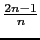
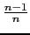
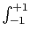

suivant: Polynôme de Hermite :
monter: Polynômes orthogonaux
précédent: Polynômes orthogonaux
Table des matières
Index
Polynôme de Legendre : legendre
legendre a comme argument un entier n et eventuellement le
nom de la variable (x par défaut).
legendre renvoie le polynôme de Legendre de degré n : c'est le
polynôme non nul, solution de l'équation différentielle :
(x2 - 1).y'' - 2.x.y' - n(n + 1).y = 0
Le polynôme de Legendre de degré n noté P(n, x) vérifie les
relations :
P(0, x) = 1
P(1, x) = x
P(n, x) = xP(n - 1, x) - P(n - 2, x)
Ces polynômes sont orthogonaux pour le produit scalaire :
< f, g > = f (x)g(x)dx
On tape :
legendre(4)
On obtient :
(35*x^4+-30*x^2+3)/8
On tape :
legendre(4,y)
On obtient :
(35*y^4+-30*y^2+3)/8
Documentation de giac écrite par Renée De Graeve